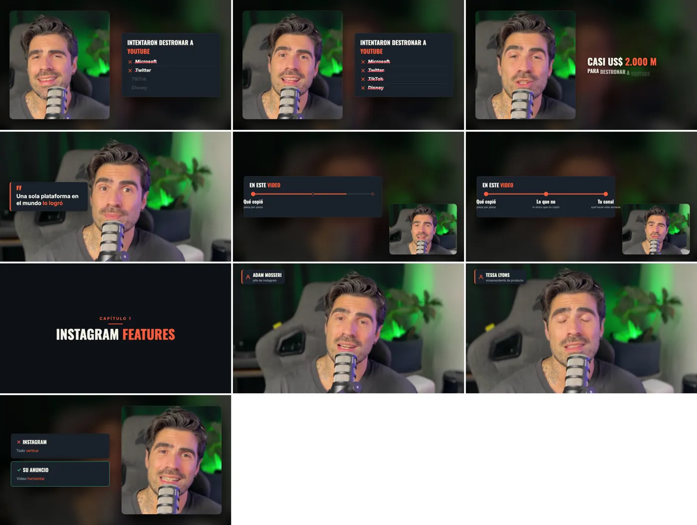
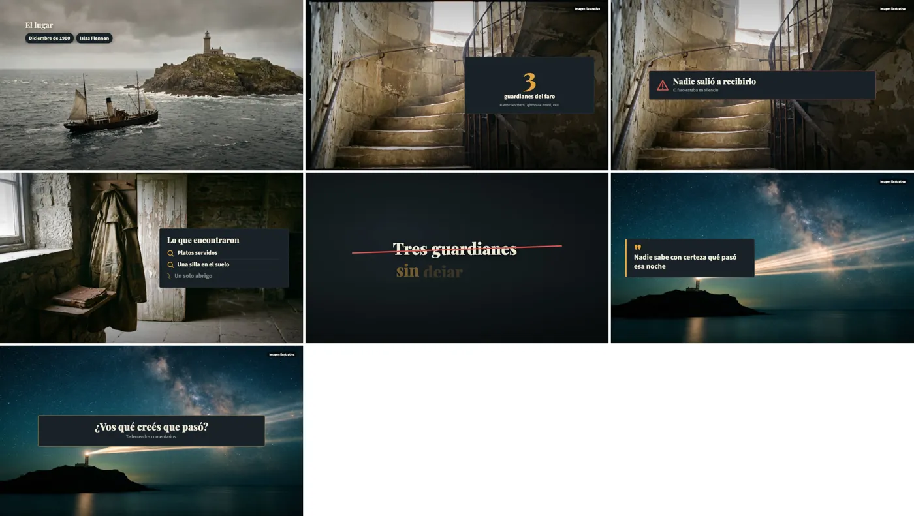

Edita
Edita
Edita
Edita
Grabás, dejás el video en Descargas y escribís "Edita personal".Dejás tu audio en Descargas y escribís "Edita faceless". Claude corta, transcribe, anima con Remotion y HyperFrames, mezcla la música y te entrega un solo archivo, con tu estilo.
❯
No hace falta saber programar ni tocar la terminal. Copiás cada pedido, lo pegás en Claude Code y él hace el resto. Se hace una sola vez.
Revisa e instala lo que falta.
Le enseñan a Claude a usar bien Remotion y HyperFrames.
Bajala con el botón de arriba y dejala en Descargas.
Si la terminal te pide la contraseña de tu compu, la escribís vos ahí (no se ve mientras tipeás). Nunca la pegues en el chat.
La primera vez, Claude no edita nada: te hace un formulario de a una pregunta, con opciones numeradas y una ★ recomendada. Con tus respuestas arma tu ficha de edición y desde ahí cada video sale con tu estilo.
✻ Cogitated for 7s · done 11:46 PM ❯ Misterios reales de faros y barcos para adultos curiosos ⏺ ¡Buenísimo! Anoto: misterios reales de faros y barcos, para adultos curiosos. Como son casos reales, cada dato que aparezca en pantalla tiene que tener su fuente. --- Pregunta 3 de 18 · ¿Qué formato hacés? Hay dos tamaños de video: - Largo horizontal (16:9): el video común de YouTube, el que se mira acostado en la pantalla. - Vertical (9:16): Shorts, Reels y TikTok, el que se mira con el celular parado. 1. Solo largos horizontales (16:9) 2. Solo Shorts / Reels verticales (9:16) 3. Los dos ★ (recomendado: los Shorts te traen gente nueva a los videos largos) 4. No sé / elegí vos (uso la ★) Contestá con el número. ✻ Brewed for 4s · done 11:47 PM
¿Querés cambiar algo después? Le decís "Actualizá mi ficha: desde ahora los títulos van en amarillo" y queda para siempre.
Las mismas herramientas, reglas distintas. Si editás un faceless como si fuera de marca personal, el video se siente raro aunque esté bien hecho. Tocá el interruptor de arriba y mirá tu columna.
Así se ve lo que hace Claude, paso a paso. Todo pasa en tu computadora: no se sube nada a internet.


Ran 1 shell command ⏺ Todo instalado. Preparo el video (convierte colores, separa la voz y saca cuadros de muestra para ubicar tu cara). Ran 1 shell command ⏺ Video de 38 s, 1080p, sin HDR. La voz vino baja (−23,3 LUFS); al final la subo a −14 con un limitador para que no suene rota. Ahora transcribo en la compu y miro dónde está tu cara. Read 1 file, ran 1 shell command ⏺ La transcripción salió bien (112 palabras). Miro el cuadro grande para medir la cara con precisión. Read 1 file ⏺ Cara en x=975, y=470: coincide con tu ficha. Ahora busco frases repetidas y corto los silencios largos, así
- Textos y gráficos: van con tu paleta y tus fuentes:
- lugar y fecha aparecen como etiquetas
- el "3 guardianes" cuenta desde cero
- "Nadie salió a recibirlo" sale como aviso
- las pistas se suman de a una a la derecha
- "Tres guardianes" se tacha
- "Nadie sabe con certeza" aparece como cita
- cierra el llamado a comentar de tu ficha
- Cambios respecto del video anterior: tu historial ya tenía un video sobre este faro, así que cambié la
forma en que aparecen los textos y el tipo de cada gráfico para no repetirlo.
- Sonido: la música es "silk", la que pide tu ficha, y baja sola cuando hablás. Los efectos son suaves.
- Volumen y sincronía: quedó a −14 LUFS, el nivel que usa YouTube, sin picos recortados, y la voz está
perfectamente sincronizada con la imagen.
- Licencia: la música y los efectos de Mixkit se pueden usar gratis en YouTube sin nombrar al autor.
Tres cosas para que revises:
1. La carpeta del canal: tu ficha dice que el canal vive en /private/tmp/edita-prueba/canal-faceless, pero
la ficha estaba en mi-canal/, así que trabajé ahí, en mi-canal/faro-flannan/. Si la carpeta buena es la
otra, corregí esa línea de la ficha.
2. La fuente del número 3: le puse "Northern Lighthouse Board, 1900", porque tu ficha pide fuente para los
datos reales. La saqué de lo que sé de la historia, no de un documento que me hayas pasado. Si no te
convence, la saco.
3. El tachado: la raya roja sobre "Tres guardianes" queda un poco más ancha que la palabra. Se nota poco; si
te molesta, lo ajusto.
Agregué este video al historial del canal. Si querés, te armo 5 títulos, la descripción, las etiquetas y 2–3
ideas de miniatura.
✻ Sautéed for 3m 52s · done 11:53 PMCon dos o tres referencias buenas, Claude entiende más que con diez párrafos de explicación.
En los canales grandes de tu nicho (los de habla inglesa suelen invertir más en edición) y en Behance o Pinterest con palabras como "motion graphics", "kinetic typography" o tu nicho.
Sacá una captura del momento exacto y dejala en Descargas, o pegá el link del video con el minuto.
⌘⇧4 Mac · ⊞⇧S Windows
Claude recrea el estilo con tus colores, tus textos y tus imágenes. Nunca le pidas que use imágenes, música o clips de otros canales: eso te trae problemas de derechos.
Mirá el video completo, anotá minuto y segundo y mandá todos los cambios en un solo mensaje: Claude los corrige juntos y renderiza una sola vez.
Salieron de editar videos reales. La skill ya los evita, pero conviene saber por qué pasan. Se resaltan los de tu tipo de canal.
La voz va una fracción de segundo atrasada respecto de la boca.
render sin sonido y después se le une tu audio original.
Aparecen antes de que lo digas, y el error crece hacia el final.
volver a transcribir el audio ya cortado.
O fuera de la zona segura de los Reels, donde Instagram tapa los bordes.
regla en la ficha; Claude lo revisa en las fotos antes del render.
Después de media hora, casi siempre porque falta un archivo.
pasale todas las capturas antes de empezar.
Sonaba bien en la compu, pero en el teléfono se oye roto.
grabá con buen volumen y que Claude controle los picos.
Para llenar la pantalla, Claude puede inventar un número.
todo dato inventado lleva "EJEMPLO"; los reales, su fuente.
Y tu ficha mejora el siguiente video. Misma estética siempre, elementos nuevos en cada video: Claude lleva el historial para no repetirse.